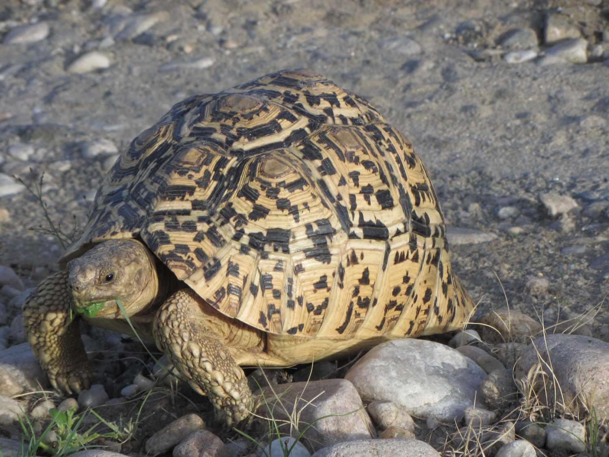

African Leopard Tortoise

The leopard tortoise (Stigmochelys pardalis) is a large and attractively marked tortoise found in the savannas of eastern and southern Africa, from Sudan to the southern Cape. It is the only member of the genus Stigmochelys, although in the past it was commonly placed in Geochelone.[2] This tortoise is a grazing species that favors semi-arid, thorny to grassland habitats. In both very hot and very cold weather they may dwell in abandoned fox, jackal, or aardvark holes. Leopard tortoises do not dig other than to make nests in which to lay eggs. Given its propensity for grassland habitats, it grazes extensively upon mixed grasses. It also favors succulents and thistles.(Wikipedia)